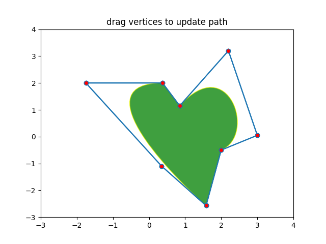

Note
Click here to download the full example code
Path Editor¶
Sharing events across GUIs.
This example demonstrates a cross-GUI application using Matplotlib event handling to interact with and modify objects on the canvas.
import numpy as np
from matplotlib.backend_bases import MouseButton
from matplotlib.path import Path
from matplotlib.patches import PathPatch
import matplotlib.pyplot as plt
fig, ax = plt.subplots()
pathdata = [
(Path.MOVETO, (1.58, -2.57)),
(Path.CURVE4, (0.35, -1.1)),
(Path.CURVE4, (-1.75, 2.0)),
(Path.CURVE4, (0.375, 2.0)),
(Path.LINETO, (0.85, 1.15)),
(Path.CURVE4, (2.2, 3.2)),
(Path.CURVE4, (3, 0.05)),
(Path.CURVE4, (2.0, -0.5)),
(Path.CLOSEPOLY, (1.58, -2.57)),
]
codes, verts = zip(*pathdata)
path = Path(verts, codes)
patch = PathPatch(
path, facecolor='green', edgecolor='yellow', alpha=0.5)
ax.add_patch(patch)
class PathInteractor:
"""
An path editor.
Press 't' to toggle vertex markers on and off. When vertex markers are on,
they can be dragged with the mouse.
"""
showverts = True
epsilon = 5 # max pixel distance to count as a vertex hit
def __init__(self, pathpatch):
self.ax = pathpatch.axes
canvas = self.ax.figure.canvas
self.pathpatch = pathpatch
self.pathpatch.set_animated(True)
x, y = zip(*self.pathpatch.get_path().vertices)
self.line, = ax.plot(
x, y, marker='o', markerfacecolor='r', animated=True)
self._ind = None # the active vertex
canvas.mpl_connect('draw_event', self.on_draw)
canvas.mpl_connect('button_press_event', self.on_button_press)
canvas.mpl_connect('key_press_event', self.on_key_press)
canvas.mpl_connect('button_release_event', self.on_button_release)
canvas.mpl_connect('motion_notify_event', self.on_mouse_move)
self.canvas = canvas
def get_ind_under_point(self, event):
"""
Return the index of the point closest to the event position or *None*
if no point is within ``self.epsilon`` to the event position.
"""
# display coords
xy = np.asarray(self.pathpatch.get_path().vertices)
xyt = self.pathpatch.get_transform().transform(xy)
xt, yt = xyt[:, 0], xyt[:, 1]
d = np.sqrt((xt - event.x)**2 + (yt - event.y)**2)
ind = d.argmin()
if d[ind] >= self.epsilon:
ind = None
return ind
def on_draw(self, event):
"""Callback for draws."""
self.background = self.canvas.copy_from_bbox(self.ax.bbox)
self.ax.draw_artist(self.pathpatch)
self.ax.draw_artist(self.line)
self.canvas.blit(self.ax.bbox)
def on_button_press(self, event):
"""Callback for mouse button presses."""
if (event.inaxes is None
or event.button != MouseButton.LEFT
or not self.showverts):
return
self._ind = self.get_ind_under_point(event)
def on_button_release(self, event):
"""Callback for mouse button releases."""
if (event.button != MouseButton.LEFT
or not self.showverts):
return
self._ind = None
def on_key_press(self, event):
"""Callback for key presses."""
if not event.inaxes:
return
if event.key == 't':
self.showverts = not self.showverts
self.line.set_visible(self.showverts)
if not self.showverts:
self._ind = None
self.canvas.draw()
def on_mouse_move(self, event):
"""Callback for mouse movements."""
if (self._ind is None
or event.inaxes is None
or event.button != MouseButton.LEFT
or not self.showverts):
return
vertices = self.pathpatch.get_path().vertices
vertices[self._ind] = event.xdata, event.ydata
self.line.set_data(zip(*vertices))
self.canvas.restore_region(self.background)
self.ax.draw_artist(self.pathpatch)
self.ax.draw_artist(self.line)
self.canvas.blit(self.ax.bbox)
interactor = PathInteractor(patch)
ax.set_title('drag vertices to update path')
ax.set_xlim(-3, 4)
ax.set_ylim(-3, 4)
plt.show()
Keywords: matplotlib code example, codex, python plot, pyplot Gallery generated by Sphinx-Gallery